用 gem5 cycle-accurate profile 反推 LLVM RVV 调度模型
本文以 `vdivu.vv` 为代表，说明从真实 gem5 MinorCPU 执行轨迹中为 LLVM 调度模型提取哪些公共参数和指令参数。 证据链固定为：关键汇编片段、`trace.json` marker delta、`gem5/exec.log` 动态发射周期、`profile.real_platform.yaml` 推断值，以及 real-platform gate 的 PASS 结论。
背景和证据链
LLVM 的 machine scheduler 不直接理解硬件流水线实现，它依赖 TableGen 中的 `SchedMachineModel`、 `ProcResource`、`SchedWriteRes`、`SchedReadAdvance` 等描述。若这些数值只来自文档或估计， `llvm-mca` 和后端调度会在吞吐、RAW 间隔、资源冲突上偏离真实处理器。这里的目标不是为所有 RVV 指令逐条讲解， 而是用一条 profile 清晰且与 real gem5 gate 一致的 `vdivu.vv` 展示完整方法。
| 证据层 | 本文使用的文件 | 作用 |
|---|---|---|
| 汇编 | `results/blog/.../test.s` 与 `experiments/blog/vdivu-vv-composite-real/test.s` | 定义 marker 窗口内的真实指令序列。 |
| marker delta | `results/blog/.../trace.json` | 给出 start/end marker 对应的 gem5 cycle。 |
| 动态周期 | `results/blog/.../gem5/exec.log` | 确认每条宏指令和 micro row 的实际发射周期。 |
| 推断值 | `results/vdivu_vv/profile.real_platform.yaml` | 记录 LLVM-facing 字段的 inferred value。 |
| 全局一致性 | `results/common/search_model_real_platform_summary.md` | 给出 exact_fit 与公式：`Latency = 4 + 0 * LMUL`，`ReleaseAtCycles = 0 + 1 * LMUL`。 |
| 门禁 | `results/common/experiment_quality.md` | `Gate status: PASS`，`Confidence: approved_real_platform`，178/178 real gem5 groups covered。 |
参数分类
| 类别 | 字段 | 本文结论 |
|---|---|---|
| 处理器公共参数 | `IssueWidth` | `2`，T21 中 vector 和 scalar 可同周期发射。 |
| 处理器公共参数 | `MicroOpBufferSize` | `0`，任务先验与 in-order marker window 一致。 |
| 资源拓扑 | `ProcResource` / `ProcResGroup` | `YuShuXinVPipe0` / `YuShuXinVPipe1` / `YuShuXinAnyVPipe`；`vdivu.vv` canonical 到 `YuShuXinVPipe0`。 |
| 指令写资源 | `Latency` | m1/m2/m4 均为 `4`。 |
| 指令写资源 | `ReleaseAtCycles` | m1/m2/m4 为 `1/2/4`，随 LMUL 线性扩展。 |
| 指令写资源 | `AcquireAtCycles` | 当前实验不识别 delayed acquire；LLVM 草案不生成该字段。 |
| 指令写资源 | `NumMicroOps` | `1`；LMUL 的多周期占用由 `ReleaseAtCycles` 表达。 |
| 分组约束 | `SingleIssue` / `BeginGroup` / `EndGroup` | `SingleIssue=false`；不生成 `BeginGroup` / `EndGroup`。 |
| 读端 bypass | `ReadAdvance` | 当前 T12 只约束 readiness/Latency，不识别 consumer-specific bypass；不生成字段。 |
| 方法论参数 | `timestamp_model` | zero-cost label-PC wrapper，marker 自身 `cycles=0` 且不占 issue slot。 |
IssueWidth
`IssueWidth` 是处理器模型的公共发射宽度，表示同一调度周期最多可发射多少个 micro-op 或调度实体。 对 in-order MinorCPU 而言，它决定独立 vector 指令是否能与 scalar 指令同周期并行进入执行侧。
关键汇编片段
# results/blog/vdivu_vv/experiments/t21-vdivu-vv-m1-n4/test.s
vsetvli x0, x5, e32, m1, ta, ma
...
__rvv_profile_marker_t21_vdivu_vv_m1_n4_start:
vdivu.vv v2, v0, v1
add x20, x21, x22
vdivu.vv v3, v0, v1
add x23, x24, x25
vdivu.vv v4, v0, v1
add x26, x27, x28
vdivu.vv v5, v0, v1
add x29, x30, x31
__rvv_profile_marker_t21_vdivu_vv_m1_n4_end:| 证据 | 值 |
|---|---|
| `trace.json` | start=266，end=270，delta=4。 |
| `exec.log` | cycle 266/267/268/269 均同时出现一条 `vdivu_vv` 和一条 scalar `add`。 |
| `processor.yaml` | `issue_width.value = 2`。 |
| 门禁 | `experiment_quality.md`: PASS；`mismatch_report.md`: synthetic calibration PASS。 |
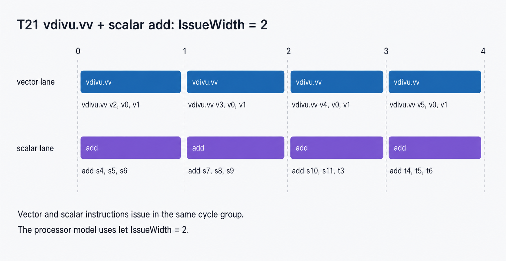
图中每个周期都有 vector lane 和 scalar lane 两个实体，因此该处理器模型需要 `let IssueWidth = 2`。 这不是 `vdivu.vv` 的私有属性，而是 `SchedMachineModel` 的全局参数。
def YuShuXinModel : SchedMachineModel {
let IssueWidth = 2;
}MicroOpBufferSize
`MicroOpBufferSize` 描述 scheduler 可观察的 micro-op buffer 或 ROB 容量。值为 `0` 时，LLVM 按 in-order 管线建模，不假设一个可跨越依赖或资源冲突的乱序窗口。
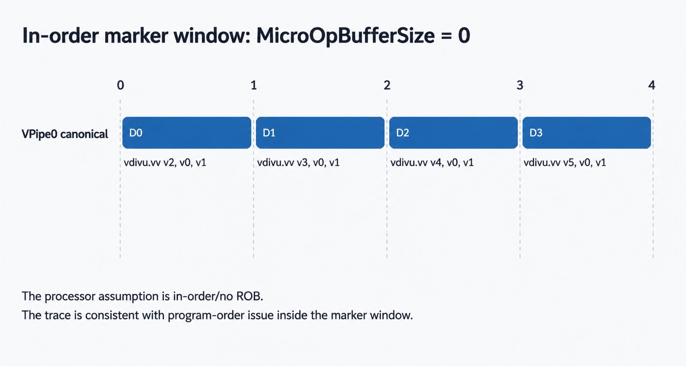
| 汇编窗口 | trace / profile / gate | LLVM 实现 |
|---|---|---|
| `T10_INDEPENDENT_STREAM_THROUGHPUT`：四条独立 `vdivu.vv v2..v5, v0, v1`。 | `trace.json`: 266→269；`processor.yaml`: `micro_op_buffer_size.value = 0`；real gate PASS。 | 在 `SchedMachineModel` 中写 `let MicroOpBufferSize = 0;`。 |
def YuShuXinModel : SchedMachineModel {
let IssueWidth = 2;
let MicroOpBufferSize = 0;
}ProcResource / ProcResGroup
`ProcResource` 是 LLVM 调度模型里的执行资源实例；`ProcResGroup` 是多个资源的集合，用于表达“可用任一管线”的资源选择。 当前平台有两条 RVV pipe，profile 把 `vdivu.vv` canonical 到 `YuShuXinVPipe0`。这里存在全局 pipe0/pipe1 mirror 对称： 若全体同类指令一起交换 pipe 标签，marker delta 不变，因此报告使用固定的 canonical 方向。
关键汇编片段
# results/blog/vdivu_vv/experiments/t20-vdivu-vv-vredsum-vs-m1-n4/test.s
__rvv_profile_marker_t20_vdivu_vv_vredsum_vs_m1_n4_start:
vdivu.vv v2, v0, v1
vredsum.vs v3, v0, v1
vdivu.vv v4, v0, v1
vredsum.vs v5, v0, v1
vdivu.vv v6, v0, v1
vredsum.vs v7, v0, v1
vdivu.vv v8, v0, v1
vredsum.vs v9, v0, v1
__rvv_profile_marker_t20_vdivu_vv_vredsum_vs_m1_n4_end:| 证据 | 值 |
|---|---|
| `trace.json` | start=266，end=273，delta=7。 |
| `profile.real_platform.yaml` | m1/m2/m4 `ProcResource = YuShuXinVPipe0`。 |
| `search_model_real_platform_summary.md` | `vdivu_vv` 三个 LMUL 的 `ProcResource` 均 exact_fit。 |
| 边界 | pipe0/pipe1 是对称标签；本文使用报告 canonical 值，不声称物理布线名称。 |
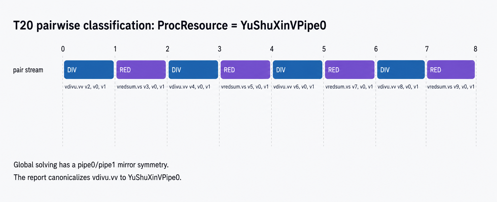
def YuShuXinVPipe0 : ProcResource<1>;
def YuShuXinVPipe1 : ProcResource<1>;
def YuShuXinAnyVPipe : ProcResGroup<[YuShuXinVPipe0, YuShuXinVPipe1]>;Latency
`Latency` 是写端结果对后继读端可见所需的调度周期数。对 RAW 链而言，如果后一条 `vdivu.vv` 复用前一条目的寄存器作为源操作数，它必须等到前一条结果 ready。
关键汇编片段
# results/blog/vdivu_vv/experiments/t11-vdivu-vv-m1-n4/test.s
__rvv_profile_marker_t11_vdivu_vv_m1_n4_start:
vdivu.vv v2, v0, v1
vdivu.vv v2, v2, v1
vdivu.vv v2, v2, v1
vdivu.vv v2, v2, v1
__rvv_profile_marker_t11_vdivu_vv_m1_n4_end:| 来源 | 观测 |
|---|---|
| `trace.json` | start=266，end=278，delta=12。 |
| `exec.log` | 四条 dependent `vdivu_vv` 分别在相对周期 0、4、8、12 发射。 |
| 推导 | 相邻 RAW issue 间隔为 4，因此 `Latency = 4`。 |
| `profile.real_platform.yaml` | m1/m2/m4 均 inferred `Latency: 4`。 |
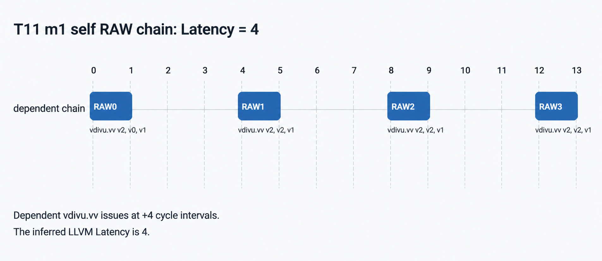
def YuShuXinWriteVIDivV_M1 : SchedWriteRes<[YuShuXinVPipe0]> {
let Latency = 4;
let ReleaseAtCycles = [1];
let NumMicroOps = 1;
}ReleaseAtCycles
`ReleaseAtCycles` 描述写资源从发射后经过多少周期释放，从而允许同一资源上的下一条独立指令进入。 它主要控制吞吐，而不是 RAW ready 时间。
关键汇编片段
# results/blog/vdivu_vv/experiments/t10-vdivu-vv-m1-n4/test.s
__rvv_profile_marker_t10_vdivu_vv_m1_n4_start:
vdivu.vv v2, v0, v1
vdivu.vv v3, v0, v1
vdivu.vv v4, v0, v1
vdivu.vv v5, v0, v1
__rvv_profile_marker_t10_vdivu_vv_m1_n4_end:| LMUL | marker delta | 宏指令 issue 周期 | 推断 ReleaseAtCycles |
|---|---|---|---|
| m1 | 266→269，delta=3 | 0,1,2,3 | 1 |
| m2 | 212→219，delta=7 | 0,2,4,6 | 2 |
| m4 | 191→206，delta=15 | 0,4,8,12 | 4 |
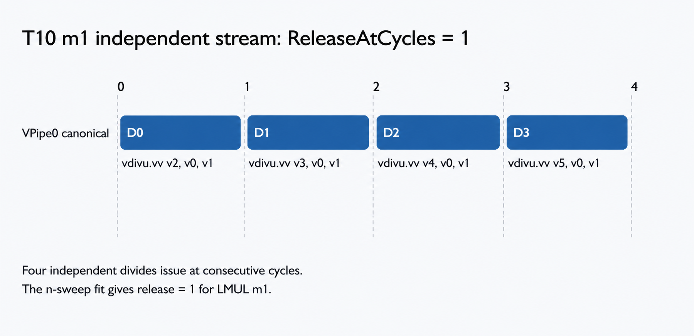
`profile.real_platform.yaml` 给出 m1/m2/m4 的 `ReleaseAtCycles = 1/2/4`； `search_model_real_platform_summary.md` 拟合公式为 `0 + 1 * LMUL`。
AcquireAtCycles
`AcquireAtCycles` 表示资源在指令发射后何时被占用。默认模型等价于发射当周期 acquire。 当前实验能观察 issue 周期、release 间隔和 RAW readiness，但没有构造出可以区分“发射时 acquire”与“延迟 acquire”的证据。
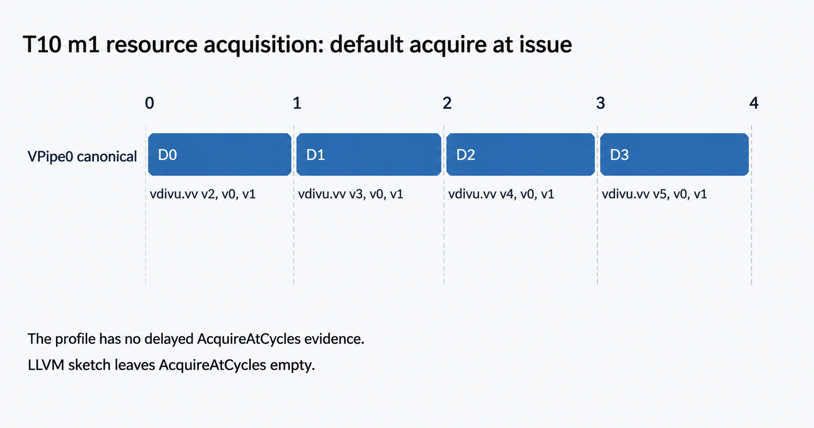
| 字段含义 | 当前实验结论 | LLVM 草案 |
|---|---|---|
| 资源相对 issue 的 acquire 时间。 | 不识别 delayed acquire；没有 profile 字段声称非零 `AcquireAtCycles`。 | 不生成 `AcquireAtCycles`，保留 LLVM 默认 acquire-at-issue 语义。 |
NumMicroOps
`NumMicroOps` 是 LLVM scheduler 中该调度写操作消耗的 issue micro-op 数。它不是 gem5 展开的每个 LMUL lane micro row 数量。 本轮 real-platform 搜索为 `vdivu.vv` 的 m1/m2/m4 都给出 `NumMicroOps = 1`，LMUL 的多周期资源占用由 `ReleaseAtCycles` 建模。
| 证据 | 解释 |
|---|---|
| T10 m1 `exec.log` | 每条 `vdivu_vv` 宏指令对应一个 `vdivu_vv_micro ... .0` row。 |
| `profile.real_platform.yaml` | m1/m2/m4 `NumMicroOps.status = inferred`，`value = 1`。 |
| LMUL m2/m4 | gem5 会有 `.0/.1` 或 `.0/.1/.2/.3` micro rows；LLVM 字段仍使用 `NumMicroOps=1`，用 release 数组表达占用长度。 |
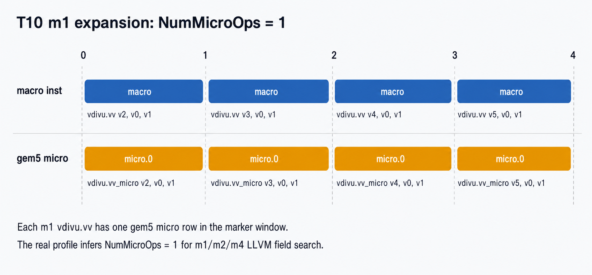
SingleIssue / BeginGroup / EndGroup
`SingleIssue` 表示该写操作必须独占发射组；`BeginGroup` / `EndGroup` 则用于强制组边界。T21 显示 `vdivu.vv` 可以与 scalar `add` 在同一 cycle group 中并行出现，因此当前 profile 推断 `SingleIssue = false`。
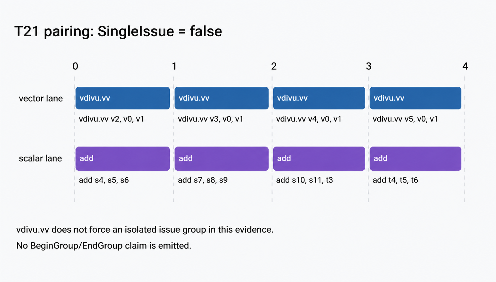
| 字段 | 当前值 | LLVM 生成策略 |
|---|---|---|
| `SingleIssue` | false | 可省略默认 false；若生成器需要显式字段，可写 `let SingleIssue = 0;`。 |
| `BeginGroup` | 当前实验不生成 | 不添加。 |
| `EndGroup` | 当前实验不生成 | 不添加。 |
ReadAdvance
`ReadAdvance` 是读端对特定写端的 bypass/提前可读建模。它不是通用 latency 本身，而是“某类 consumer 读取某类 producer” 时是否比默认 latency 更早。当前 T12 只说明 producer-consumer readiness 与 `Latency=4` 一致，不能识别 consumer-specific bypass。
关键汇编片段
# results/blog/vdivu_vv/experiments/t12-vdivu-vv-m1-k2-vadd-vv/test.s
__rvv_profile_marker_t12_vdivu_vv_m1_k2_vadd_vv_start:
vdivu.vv v2, v0, v1
vadd.vv v4, v0, v1 # independent filler 0
vadd.vv v5, v0, v1 # independent filler 1
vadd.vv v3, v2, v1
__rvv_profile_marker_t12_vdivu_vv_m1_k2_vadd_vv_end:| 观测 | 解释 |
|---|---|
| producer at 266；fillers at 267/268；consumer at 270 | consumer 在 producer+4 才发射，中间 cycle 269 为空泡。 |
| `trace.json` delta=4 | 与 `Latency=4` 一致。 |
| 字段状态 | 不生成 `ReadAdvance`；该实验不声明 bypass。 |
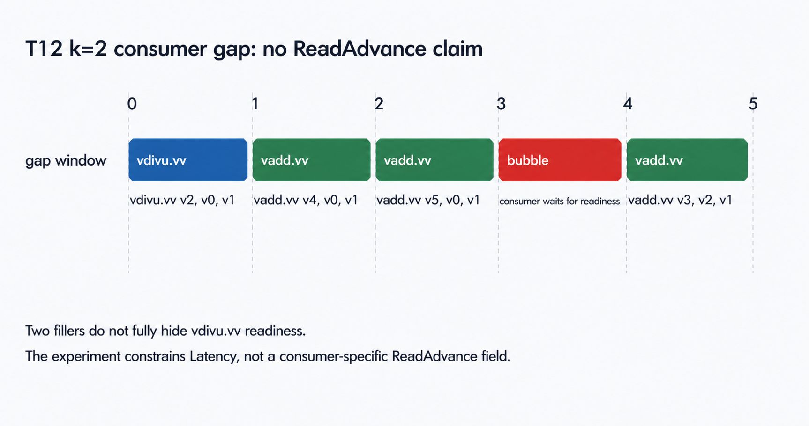
LMUL scaling
RVV 的 LMUL 会改变一个向量寄存器组覆盖的物理寄存器数量，从而改变资源占用时间。本文的 real-platform 搜索显示： `Latency` 不随 LMUL 变化，保持 `4`；`ReleaseAtCycles` 随 LMUL 从 `1` 扩展到 `2`、`4`。
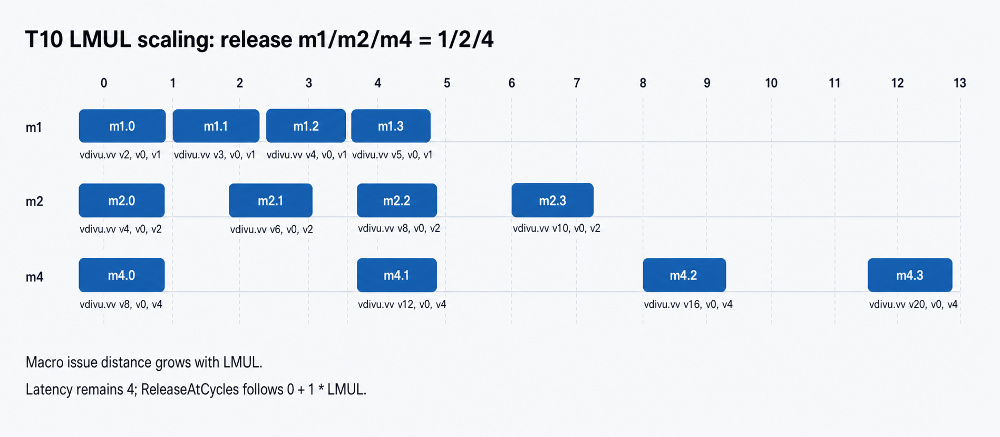
| LMUL | `trace.json` marker | issue 间隔 | `Latency` | `ReleaseAtCycles` |
|---|---|---|---|---|
| m1 | 266→269 | 1 | 4 | 1 |
| m2 | 212→219 | 2 | 4 | 2 |
| m4 | 191→206 | 4 | 4 | 4 |
// Formula fit from search_model_real_platform_summary.md
Latency = 4 + 0 * LMUL
ReleaseAtCycles = 0 + 1 * LMULtimestamp_model
`timestamp_model` 不是 LLVM TableGen 字段，而是本 profiling 方法的基础假设：`TIMESTAMP_MARK` 必须是 zero-cost label-PC wrapper。 如果 marker 本身占 issue slot，那么所有 marker delta 都会被污染。
关键汇编片段
# results/blog/common/experiments/t00-marker/test.s
__rvv_profile_marker_t00_marker_t0:
.Lrvv_profile_marker_t00_marker_t0:
__rvv_profile_marker_t00_marker_t1:
.Lrvv_profile_marker_t00_marker_t1:
li a0, 0
li a7, 93
ecall| 证据 | 结论 |
|---|---|
| `trace.json` | `t0=93`，`t1=93`，delta=0。 |
| `processor.yaml` | `timestamp_model.kind=zero_cost_label_marker`，`cycles=0`，`occupies_issue_slot=false`。 |
| `experiment_quality.md` | `Marker Contract: PASS`。 |
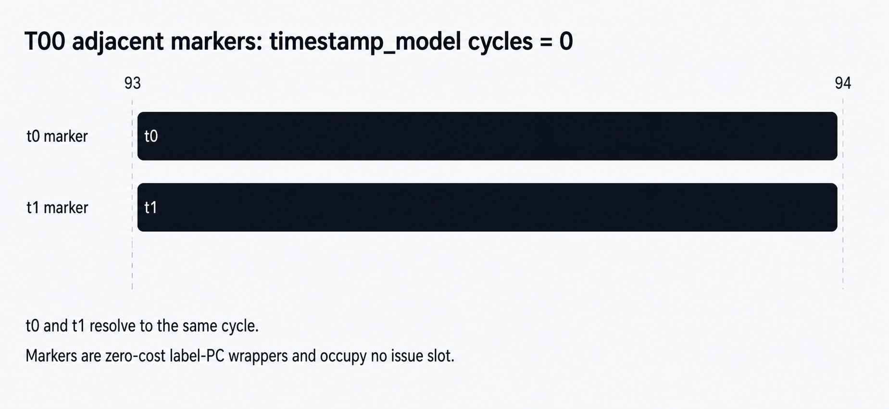
综合时序实验：Latency、Release、Acquire、LMUL 与空泡如何共同作用
为避免把每个字段割裂地解释，本文额外构造了一个 blog-only real gem5 实验： `experiments/blog/vdivu-vv-composite-real/test.s`。它在同一程序中放入 m1 gap、m1 independent stream、 m1 RAW chain、m2 stream 和 m4 stream。各段之间插入 scalar drain，使前一段的 vector 副作用不影响后一段； drain 本身不作为 profile 值。
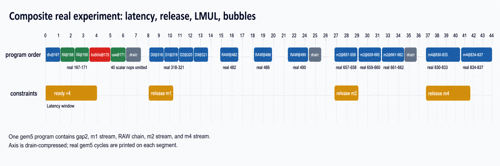
完整关键实验片段
TIMESTAMP_MARK m1_gap2_start
vdivu.vv v8, v0, v1
vadd.vv v9, v0, v1
vadd.vv v10, v0, v1
vadd.vv v11, v8, v1
TIMESTAMP_MARK m1_gap2_end
.rept 40
addi x0, x0, 0
.endr
TIMESTAMP_MARK m1_ind_start
vdivu.vv v12, v0, v1
vdivu.vv v13, v0, v1
vdivu.vv v14, v0, v1
vdivu.vv v15, v0, v1
TIMESTAMP_MARK m1_ind_end
.rept 40
addi x0, x0, 0
.endr
TIMESTAMP_MARK m1_raw_start
vdivu.vv v20, v0, v1
vdivu.vv v20, v20, v1
vdivu.vv v20, v20, v1
TIMESTAMP_MARK m1_raw_end
.rept 40
addi x0, x0, 0
.endr
vsetvli x0, x5, e32, m2, ta, ma
TIMESTAMP_MARK m2_ind_start
vdivu.vv v8, v4, v6
vdivu.vv v10, v4, v6
vdivu.vv v12, v4, v6
TIMESTAMP_MARK m2_ind_end
.rept 40
addi x0, x0, 0
.endr
vsetvli x0, x5, e32, m4, ta, ma
TIMESTAMP_MARK m4_ind_start
vdivu.vv v24, v16, v20
vdivu.vv v28, v16, v20
TIMESTAMP_MARK m4_ind_end| 段 | 真实 marker cycles | 关键 `exec.log` 周期 | 理论值 | 验证 |
|---|---|---|---|---|
| m1 gap2 | 167→171，delta=4 | producer 167；fillers 168/169；bubble 170；consumer 171 | `Latency=4`，consumer earliest=167+4 | PASS |
| m1 independent | 318→321，delta=3 | `vdivu` at 318/319/320/321 | `ReleaseAtCycles=1` | PASS |
| m1 RAW | 482→490，delta=8 | `vdivu` at 482/486/490 | 两次 `+4` RAW gap | PASS |
| m2 independent | 657→662，delta=5 | macro at 657/659/661；micro rows cover 657-658/659-660/661-662 | `ReleaseAtCycles=2` | PASS |
| m4 independent | 830→837，delta=7 | macro at 830/834；micro rows cover 830-833/834-837 | `ReleaseAtCycles=4` | PASS |
这张综合图给出字段之间的合成语义：`Latency=4` 决定依赖 consumer 的最早发射点； `ReleaseAtCycles` 决定同一 vector resource 上独立指令的吞吐；LMUL 只改变 release/occupancy； 当前没有额外 delayed acquire 或 `ReadAdvance` 字段，因此 acquire 按默认 issue-cycle 处理，consumer readiness 也只由 latency 解释。
LLVM TableGen 草案
以下草案是本文 evidence 对 LLVM 的直接落点。它不是完整 upstream patch，而是说明 profile 值应如何进入 `SchedMachineModel`、`ProcResource` 和 `SchedWriteRes`。
def YuShuXinModel : SchedMachineModel {
let IssueWidth = 2;
let MicroOpBufferSize = 0;
}
def YuShuXinVPipe0 : ProcResource<1>;
def YuShuXinVPipe1 : ProcResource<1>;
def YuShuXinAnyVPipe : ProcResGroup<[YuShuXinVPipe0, YuShuXinVPipe1]>;
def YuShuXinWriteVIDivV_M1 : SchedWriteRes<[YuShuXinVPipe0]> {
let Latency = 4;
let ReleaseAtCycles = [1];
let NumMicroOps = 1;
// SingleIssue is false by default; no BeginGroup/EndGroup.
// AcquireAtCycles is not emitted; default acquire-at-issue.
}
def YuShuXinWriteVIDivV_M2 : SchedWriteRes<[YuShuXinVPipe0]> {
let Latency = 4;
let ReleaseAtCycles = [2];
let NumMicroOps = 1;
}
def YuShuXinWriteVIDivV_M4 : SchedWriteRes<[YuShuXinVPipe0]> {
let Latency = 4;
let ReleaseAtCycles = [4];
let NumMicroOps = 1;
}| 字段 | 是否写入 TableGen | 原因 |
|---|---|---|
| `IssueWidth` | 写入 `SchedMachineModel` | T21 支持 dual issue。 |
| `MicroOpBufferSize` | 写入 `SchedMachineModel` | 公共 in-order 模型参数。 |
| `ProcResource` / `ProcResGroup` | 写入 | 两条 RVV pipe 和 canonical `vdivu.vv` resource。 |
| `Latency` | 写入 | T11/T12/composite 均支持 4。 |
| `ReleaseAtCycles` | 写入 | T10/composite 支持 m1/m2/m4 = 1/2/4。 |
| `NumMicroOps` | 写入或保留默认 1 | real profile exact_fit 为 1。 |
| `SingleIssue` | 不写或显式 false | T21 表明不独占 issue group。 |
| `AcquireAtCycles` | 不写 | 当前实验不能识别 delayed acquire。 |
| `ReadAdvance` | 不写 | 当前实验不能识别 consumer-specific bypass。 |